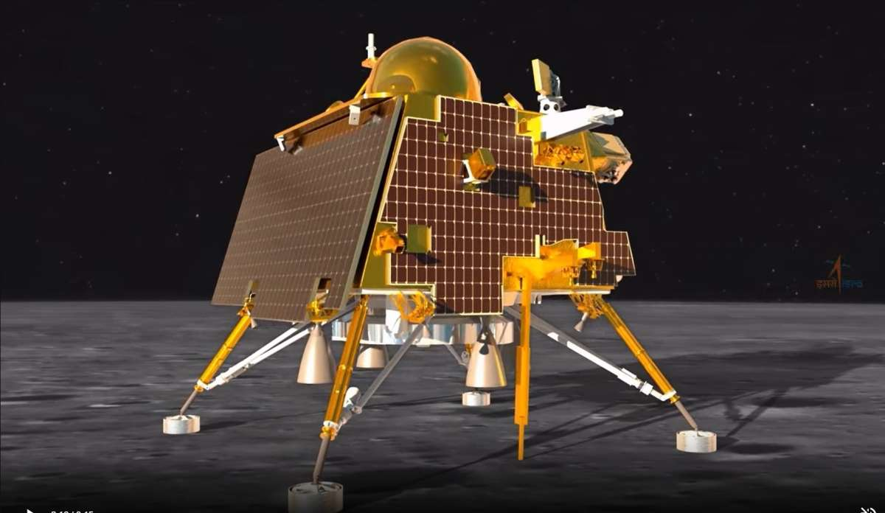

Chandrayaan-2: India's Sojourn to the Moon's South Polar Region
Exploring the Unexplored
The universe has always intrigued humanity, beckoning us with mysteries waiting to be unraveled. Among the most enchanting of these mysteries is Earth's celestial neighbor, the Moon. While it has been a constant presence in the night sky, we have only scratched the surface of its secrets. Chandrayaan-2, India's second lunar mission, embarked on an extraordinary journey to delve deeper into these enigmas.
Inception of a Dream
Chandrayaan-2's journey was a testament to the unyielding spirit of human exploration. It marked India's resolute determination to continue pushing the boundaries of space science. The mission was born from the visionary dreams of scientists and space enthusiasts who aspired to explore the lunar south polar region—a terrain where no spacecraft had ventured before. This bold dream took shape under the watchful eye of the Indian Space Research Organisation (ISRO).
Chandrayaan-2's Triumphant Lift-off
July 22, 2019, was etched into history as the day Chandrayaan-2 embarked on its epic odyssey. A successful lift-off from the Satish Dhawan Space Centre marked the beginning of an eight-week journey to the Moon. Millions around the world watched with bated breath as the Geosynchronous Satellite Launch Vehicle Mark III (GSLV Mk III) propelled the spacecraft towards its destination.
An Ingenious Triple Payload
Chandrayaan-2 consisted of three essential components, each with its specific purpose. The Orbiter would circle the Moon, the Vikram lander would descend to the lunar surface, and the Pragyan rover would explore the uncharted territory. These three companions were collectively referred to as the "Chandrayaan family." The Orbiter was the sentinel of this mission, equipped with a suite of instruments to scrutinize the lunar terrain, map its surface, and study the thin lunar exosphere. It was to be our constant lunar companion for years to come, even after the lander and rover fulfilled their duties. The Vikram lander, named in honor of Dr. Vikram Sarabhai, the visionary behind India's space program, was tasked with a historic landing. It carried the Pragyan rover and a suite of scientific instruments designed to conduct experiments on the lunar surface. Landing in the Moon's south polar region presented a challenge due to its rugged terrain and craters. Pragyan, the rover, was designed to traverse this challenging lunar terrain. Equipped with instruments to study the composition of the Moon's surface, it was ready to conduct groundbreaking experiments, all remotely controlled from Earth.
The Persevering Spirit of the Orbiter
While the landing attempt by Vikram faced a setback, the Chandrayaan-2 mission was far from a failure. The Orbiter, which continued to orbit the Moon, sent back valuable data and images. It revealed a wealth of information about the lunar surface, including signs of water molecules. The Orbiter's instruments studied the Moon's exosphere, helping scientists understand the composition of the region.
Conclusion
Chandrayaan-2 was more than just a mission to the Moon. It was a testament to human curiosity, scientific prowess, and indomitable spirit. The lunar south pole still holds secrets, and Chandrayaan-2, in its quest for knowledge, brought us one step closer to unlocking them. As we eagerly await Chandrayaan-3 and the next chapter of lunar exploration, we recognize the importance of daring to dream.